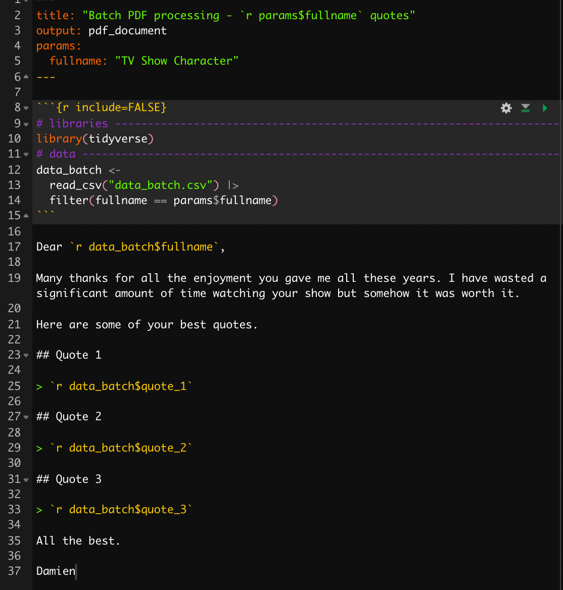
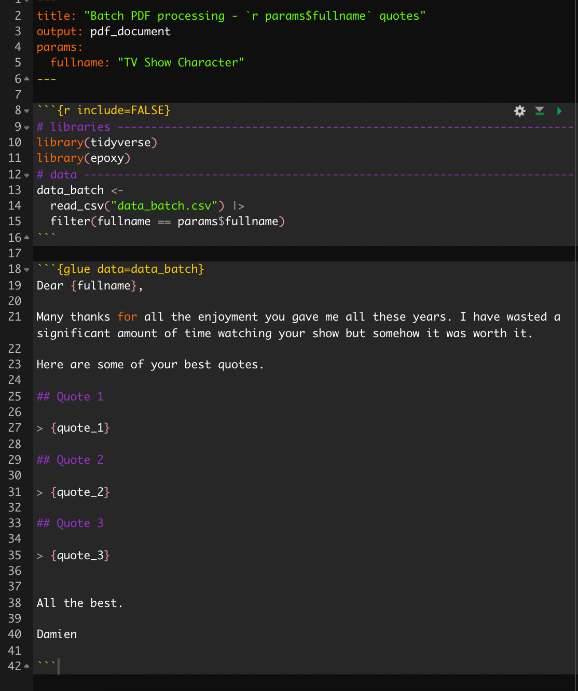
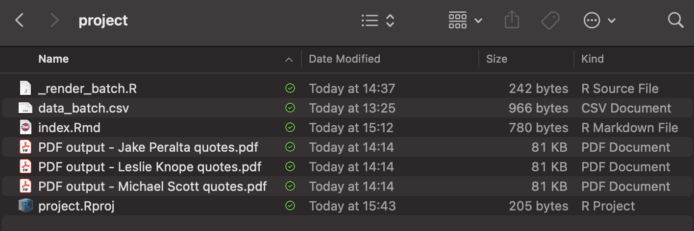

As my previous post about using docx template to create PDF with Rmarkdown files had quite a success, people might be interested by more content on how I use Rmarkdown files in my daily activities. Indeed, I have a couple of more interesting use cases to show and among them, generating multiple pdf documents at once is one of my favorite.
Here is some context: for some modules that I teach, I am assessing students on their ability to write short research papers and I require them to submit a PDF document. PDFs have a lot of advantages however it is difficult to annotate them to provide feedback to students. For this reason, I am creating a PDF report for each student containing my feedback on each section of their research paper.
Now, I could write a document for each student and save it as PDF but it appears much more efficient to write my comments in a spreadsheet and then to generate the PDF report for all the students at the same time!
The trick to create multiple PDF documents from a Rmd file is not mine, I just applied what the fantastic Alison Hill presented in her slides “Made with YAML, strings, and glue. An R Markdown valentine for you. If you are interested in doing it yourself, this presentation is amazing and far more useful than this blog post alone. However, it is always good to have different use cases and I am sure that mine can be interesting somehow.
Enough talk, time to code!
To make this example more interesting, let’s make a table with some of my favorite TV show characters and some of their quotes:
| fullname | quote_1 | quote_2 | quote_3 |
|---|---|---|---|
| Michael Scott | Sometimes I’ll start a sentence and I don’t even know where it’s going. I just hope I find it along the way. | I’m not superstitious, but I am a little stitious. | Would I rather be feared or loved? Easy. Both. I want people to be afraid of how much they love me. |
| Leslie Knope | We have to remember what’s important in life: friends, waffles, and work. Or waffles, friends, work. But work has to come third. | What I hear when I’m being yelled at is people caring really loudly at me. | There’s nothing we can’t do if we work hard, never sleep, and shirk from all other responsibilities in our lives. |
| Jake Peralta | Fine, but in protest, I’m walking over there extremely slowly! | I wasn’t hurt that badly. The doctor said all my bleeding was internal. That’s where the blood’s supposed to be. | I appealed to their sense of teamwork and camaraderie with a rousing speech that would put Shakespeare to shame. |
The table has to be saved as “data_batch.csv” to be used in the batch processing.
Now, we need a Rmd template document called “index.Rmd” which will read the data file, use each row and produce a PDF with these personalized data. Here is the YAML of this “index.Rmd” file:
---
title: "Batch PDF processing - `r params$fullname` quotes"
output: pdf_document
params:
fullname: "TV Show Character"
---In this “index.Rmd”, the key is the use of the YAML option params: with the column header to iterate on (e.g., fullname) and a null value that will be replaced by the name of each TV show character (e.g., “TV Show Character”). Note, the title of the PDF includes a variable reference to the characters’ name with an inline code.
It is also important to read the data file in this “index.Rmd” and to filter with params$fullname in order to keep only the row corresponding to the character of the iteration.
Then, two solutions to input the data in the text. The first and most natural solution would be use inline r code as follow:

The second solution is the one introduced by Alison, using the package {epoxy} created by the genious Garrick Aden-Buie. This package allows to glue field of the data very easily in R chunks. This is a bit overkill in this use case as there are only 4 columns in the data but it would be very useful in a text having many different variables.

In a new R script called “_render_batch.R”, read the data file in an object here called “data_batch”.
Then, with a purrr::walk() function, we can iterate over each TV show character (i.e., each row) to produce a PDF that includes their corresponding quotes.
data_batch <- readr::read_csv("data_batch.csv")
purrr::walk(
.x = data_batch$fullname,
~ rmarkdown::render(
input = "index.Rmd",
output_file = glue::glue("PDF output - {.x} quotes.pdf"),
params = list(fullname = {.x})
)
)Basically, purrr::walk() has two arguments:
.x a list or vector containing each element to iterate over (e.g., TV show character names).f a function used for each element of the previous list or vectorWhile .x is naturally data_batch$fullname containing all the characters’ names from the data file previously read, .f is the function rmarkdown::render() which will get the template, replace params$fullname with the value of .x and knit the document. Q.E.D!
Note the essential use of glue::glue() to include the value of .x in the name of the PDF file obtained in order not not overwrite the same document for each value of .x!
